Свободные мнемосхемы
Экран собирается под объект и методику испытаний, а не под ограничения прибора.
Измерения · регистрация · аналитика
Rlnx превращает набор приборов и сигналов в цельную измерительную систему: от поиска оборудования и живой мнемосхемы до файловой записи, SQL-истории и распределённого управления.
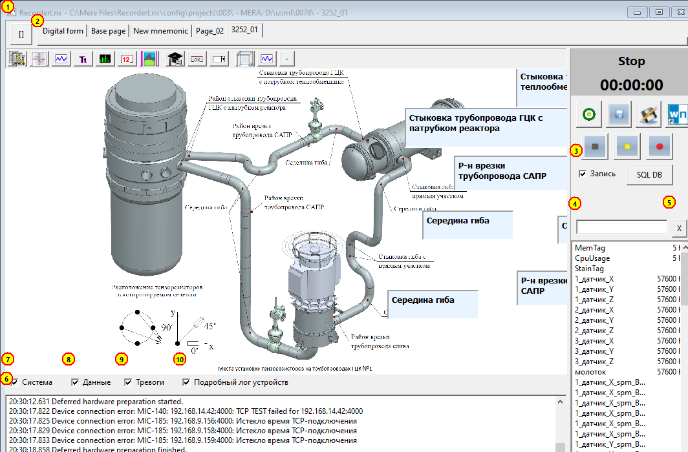
Killer features
Экран собирается под объект и методику испытаний, а не под ограничения прибора.
Живое отображение, расчёты и запись работают на одном потоке измерительных данных.
Сырые сигналы остаются в измерительных пакетах, оценки и события доступны в общей БД.
Осциллограммы, спектры, полосовые оценки, интегрирование и тренды — внутри проекта.
Новые алгоритмы, визуальные компоненты и вычисления подключаются без переделки ядра.
Несколько станций сбора объединяются RCPanel, SQL и распределённым архивом.
Экран под задачу
Оператор видит не список каналов, а сам объект испытаний: группы параметров, состояния, тренды, индикаторы и сигналы тревоги в нужной компоновке.
Результат Один взгляд вместо переходов между десятками окон.
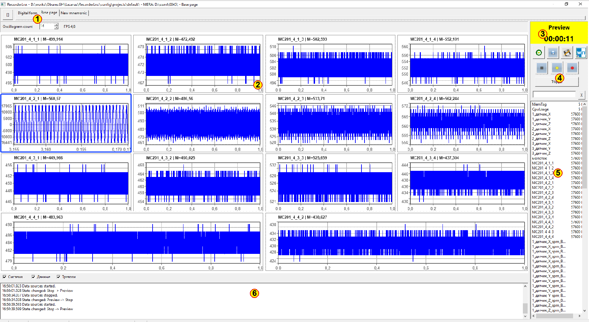
Регистрация потока
Rlnx принимает потоки от оборудования, синхронизирует их по времени, показывает оператору и пишет в штатный измерительный формат.
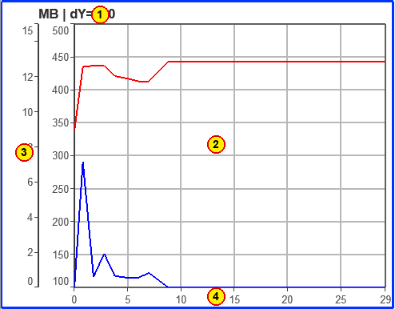
Анализ без экспорта
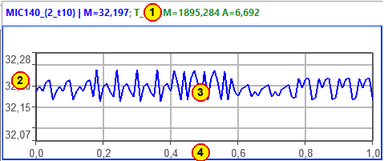
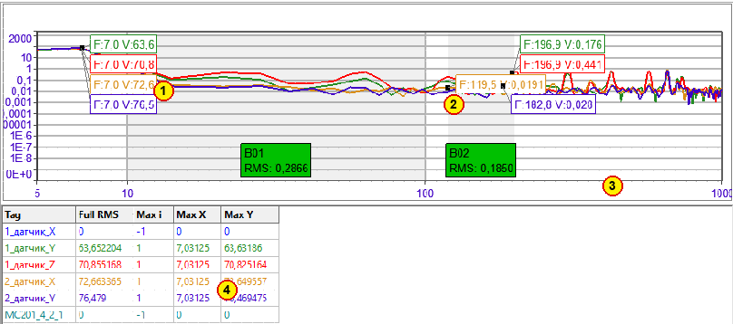
От платформы к предметной задаче
Тензорозетки, нулевая балансировка, температурная компенсация и расчёт главных напряжений превращают микродеформации в готовую картину нагружения конструкции.
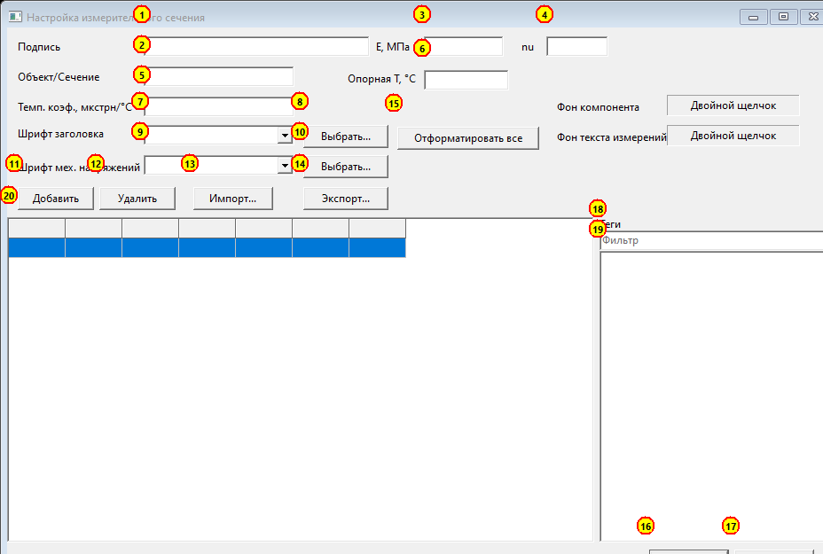
Поток акселерометров и тахоканала сразу преобразуется в спектры, полосовые оценки и интегрированные величины для контроля агрегата.
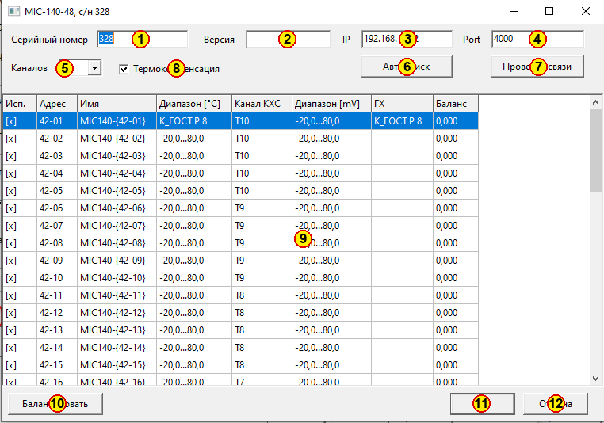
Единая модель сигнала
Имя, единицы, диапазон, градуировочная характеристика, уставки и история принадлежат одному измерительному тегу.
Результат Один раз настроенный канал одинаково понимают график, запись, SQL и алгоритмы.
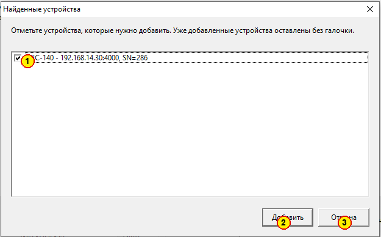
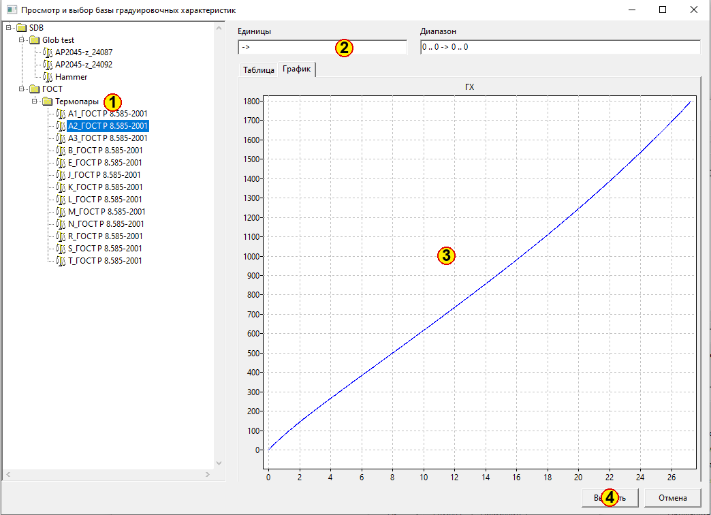
Расширяемость
Плоский кроссплатформенный ABI позволяет подключать DLL/SO-модули и развивать систему независимо от ядра.
Один код плагина собирается для Windows и Linux; проект хранит состав и версии расширений.
Распределённая система
Каждая станция остаётся автономным регистратором, а общий контур даёт синхронный запуск, обзор состояния и общий архив.
Центр управления
Координатор объединяет распределённые регистраторы в один управляемый сеанс, не забирая у них автономность.
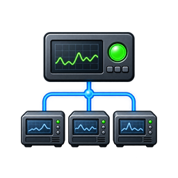
Один оператор управляет группой станций как одним комплексом.
Данные после испытания
Оценки, состояния и события становятся доступными по календарному интервалу, а исходные пакеты остаются связаны с конкретным сеансом.
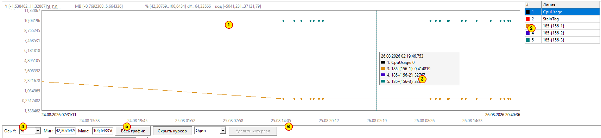
Сценарий комплекса
АРМы загружают проект, находят приборы и проверяют каналы в Preview.
RCPanel подтверждает готовность всех узлов и создаёт единое событие испытания.
Команда Record запускает локальную надёжную запись на каждой станции.
Операторы видят свои мнемосхемы, центральный АРМ — статусы и ключевые оценки.
SQL сохраняет историю и событие, пакеты измерений собираются в хранилище.
Нужный интервал и исходные файлы открываются по событию, времени или каналу.
Rlnx
Платформа закрывает весь путь измерения: конфигурацию, визуализацию, регистрацию, анализ, автоматизацию и работу распределённого комплекса.